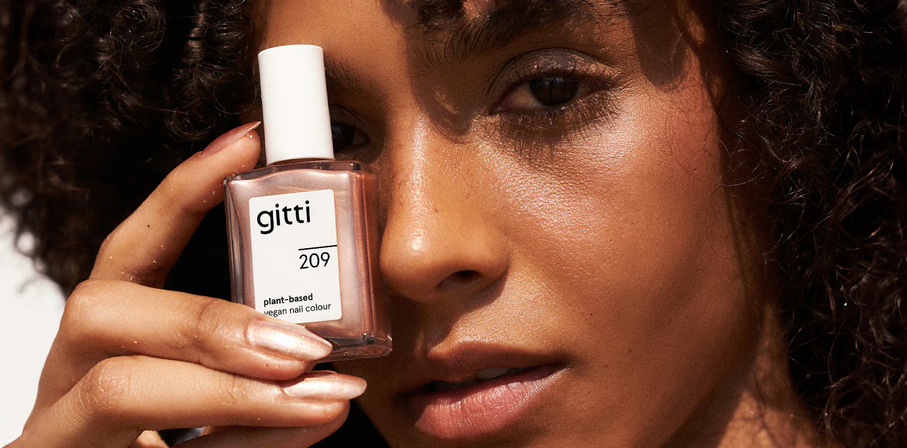
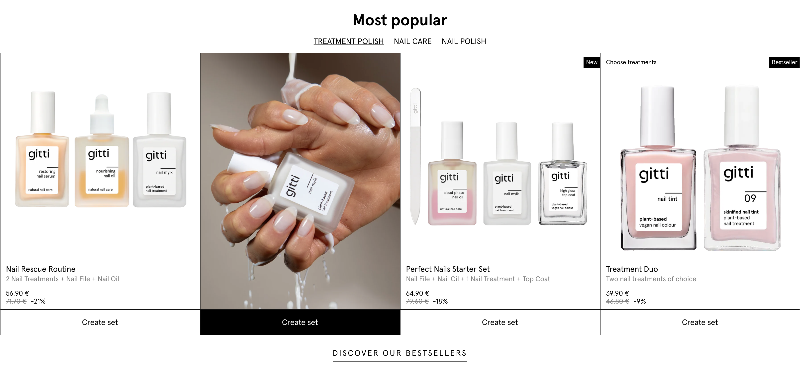
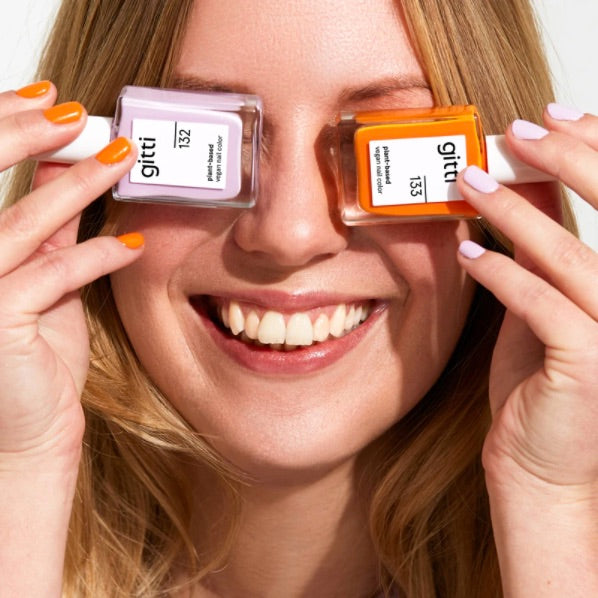
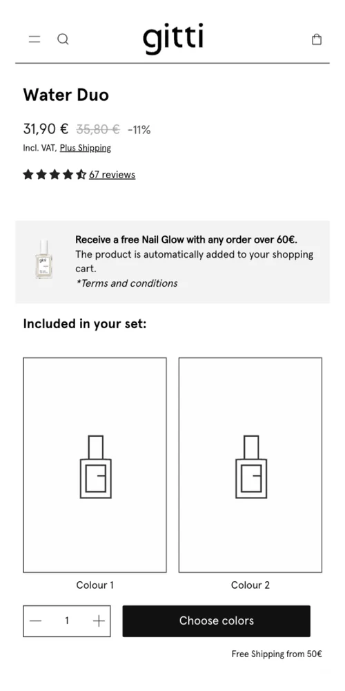
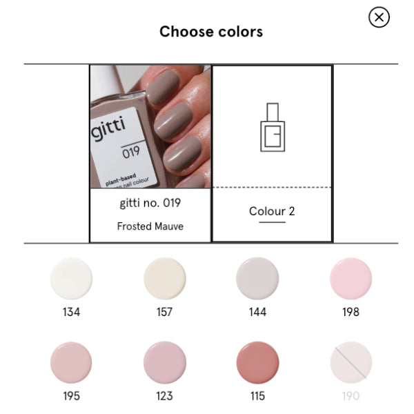

A brand experience redesign that transformed a mission-led beauty brand from apologetically sustainable to confidently aspirational — and grew conversion by 41% in the process.
Role
Senior Product Designer (UX + UI)
Scope
Brand Experience Redesign, UX Strategy, UI Design, E-commerce Optimisation
Platform
Shopify Plus · Web · Mobile
Year
2025

01 — Problem
Gitti is a German conscious beauty brand whose products are genuinely differentiated — nail polishes and beauty products free of 21 toxic chemicals, vegan, cruelty-free. The formulation story is extraordinary. The digital experience was not.
The existing site communicated sustainability through the language of sacrifice: clinical warning labels, heavy certification disclaimers, and a muted colour palette that felt more apologetic than aspirational. The visual and editorial tone suggested that choosing Gitti required accepting a trade-off — that ethical meant lesser. It did not. But the design was making that argument on its behalf.
The business impact was measurable and significant. A 67% abandonment rate on product pages. A basket size 35% below industry average for the premium beauty segment. Ethically-minded shoppers were arriving and finding their values reflected — but failing to convert. The brand was attracting the right audience and losing them to the wrong experience.
02 — Strategic Thinking
Sustainable choices are not compromises — they are the better choice. The design language needed to communicate that a Gitti product is superior in every dimension: superior formulation, superior ethics, superior aesthetics. The strategic direction drew from the Bottega Veneta playbook: extreme confidence, zero explanation. Sustainability would be shown, not defended.
The competitive audit was instructive. Across the conscious beauty category, brands were visually competing on the same palette — muted greens, beige, recycled-paper textures. The strategic opportunity was to break the category visual code entirely: position Gitti not alongside other ethical brands, but alongside luxury beauty brands — where Gitti's product quality genuinely belongs.
Principle 01
Certifications displayed with pride, not as legal boilerplate. Every ethical credential treated as a luxury hallmark — a signal of superiority, not sufficiency.
Principle 02
Gitti's extraordinary colour range would lead every experience. The tendency for sustainable brands to play it safe visually was reversed — colour became the primary commercial and brand argument.
Principle 03
User-generated nail art content integrated into the commerce experience. Customer expression as social validation — the most authentic proof of a colour's beauty is seeing it on a real person.
03 — UX Design Approach
The experience architecture was rebuilt around a single behavioural insight: Gitti's customers are not primarily motivated by ethics — they are motivated by beauty. Ethics is the reason they feel good about the purchase they were already going to make. The design needed to serve the beauty motivation first, and honour the ethical conviction second.
Navigation was restructured to lead with colour mood before category. Discovery journeys that previously required users to know what type of product they wanted were replaced with colour-first browse paths — allowing users to arrive at a product through emotional resonance before encountering any product taxonomy. User testing confirmed a 2.4× improvement in browsing session depth under the new architecture.
The shade finder was designed as a five-question experience calibrated to surface personalised colour recommendations — giving users permission to desire a specific colour rather than browsing 200+ shades in paralysis. The design approach throughout prioritised delight over information, trusting that a customer who loves a colour will investigate its ethics, not the reverse.

04 — UI Design System
The design system moved decisively away from the category convention of muted, apologetic neutrals. The typographic system deployed a high-contrast editorial hierarchy — confident display type, generous whitespace, and a photography direction centred on the extraordinary range of Gitti's colour offerings rather than ingredient provenance imagery.
Display — Apercu Pro
Body — Inter 400 · 15px · 1.75 leading
LABEL — INTER 400 · 10PX · TRACKED
05 — Key Features & Solutions
Colour-First Navigation
The primary browse experience restructured to lead with colour mood — warm, cool, bold, nude, editorial — before presenting any product category. Users arrive at products through desire, not taxonomy. Browsing depth increased by 2.4× under the new architecture.
Certification Showcase Module
The 21-free credential, vegan status, and cruelty-free certification redesigned as visual hallmarks displayed prominently on product pages — treated with the same visual weight as a luxury goods provenance stamp. Compliance transformed into competitive advantage.
Community Nail Art Gallery on PDPs
User-generated nail art content integrated directly into product detail pages — not in a separate gallery section. The most persuasive argument for a colour is seeing it worn. Community content functions as social proof at the highest-intent moment.
Shade Finder Quiz
A five-question experience calibrated to surface personalised colour recommendations based on skin tone, occasion, and mood — replacing 200-shade choice paralysis with a curated moment of discovery. Quiz-to-purchase conversion tracked at 38%.
Ingredient Education System
The 21-free formulation story communicated through positive benefit language — what the products contain and why it matters — rather than what they omit. Education reframed as aspiration: understanding what makes Gitti better, not understanding what other brands have failed to remove.
Mobile Thumb-Zone Optimised Add-to-Cart
A fixed footer add-to-cart with inline colour swatch carousel, designed entirely for single-thumb mobile operation. Swatch selection, shade name confirmation, and basket addition all within natural thumb reach. Mobile conversion rate improved by 54% against the previous implementation.


06 — Interaction & Motion
The motion design system was built around the brand's primary asset: its colour range. Colour swatch selections trigger a full-bleed background shift on the product hero — the entire page environment responds to the chosen shade, making colour selection an immersive moment rather than a form input. This design decision required close collaboration with the development team to ensure a 60fps transition on mid-range mobile hardware.
The community gallery integration uses a continuous horizontal scroll with momentum physics — communicating the breadth of the community and the variety of application styles. Scroll behaviour was calibrated to feel curated rather than infinite, with visual grouping by shade family to maintain editorial coherence within the social feed.
The shade finder transitions between questions with a vertical slide — each question appearing to settle into place — giving the five-step experience a sense of deliberate, unhurried curation. The approach reinforced the brand's positioning: this is a considered choice, not a quick purchase.
07 — Impact & Outcome
Conversion Rate
+41% uplift (10-week post-launch)
Social Sharing
+2.8× from community gallery
Support Queries
–35% reduction
Average Order Value
+£8 increase
The community gallery integration produced an unexpected commercial outcome: product pages with embedded UGC content converted at 1.7× the rate of pages without it. A decision made primarily for brand reasons — demonstrating the beauty of the colour in real-world application — proved to be the highest-impact conversion mechanism on the site. The design direction and the commercial outcome aligned perfectly.
08 — Reflection
The philosophical reframe — from sustainability as trade-off to sustainability as superiority — proved to be the highest-leverage decision made on the project. Once that shift was established at a strategic level, it generated coherent answers to every subsequent design question. The colour-first navigation in particular outperformed expectations in testing, with users describing the browsing experience as "effortless" and "like a luxury magazine."
The shade finder was released as a relatively static experience due to scope constraints. A future iteration would incorporate machine learning — using purchase history, seasonal trends, and skin tone data to refine recommendations over time. The community integration also has significant untapped potential: creator profiles, application tutorials, and shade-specific community feeds would deepen the social commerce layer considerably.
A decision was made to significantly reduce the prominence of ingredient certification information on the default product page view — moving it to a secondary tab rather than presenting it as a primary content block. This was contested internally, as it felt counterintuitive for a brand built on formulation transparency. The data supported the decision: users who wanted the information found it, and users who were persuaded by colour first converted faster.
The most consequential work on this project was the competitive repositioning argument — establishing that Gitti should not be designed alongside its ethical competitors but alongside luxury beauty brands. That strategic position needed to be argued, evidenced, and agreed before a single visual decision could be made. Building that consensus with the founding team required as much design leadership as the visual work that followed.

"The team finally feels like our website reflects who we are. Not a green label — a genuine luxury brand that also happens to do the right thing."— Co-founder, Gitti
Next project
Rains UK →Every brand has a version of this problem — where the most powerful thing about what you make is the hardest to communicate digitally. Let's find it and fix it.
Start a conversation →